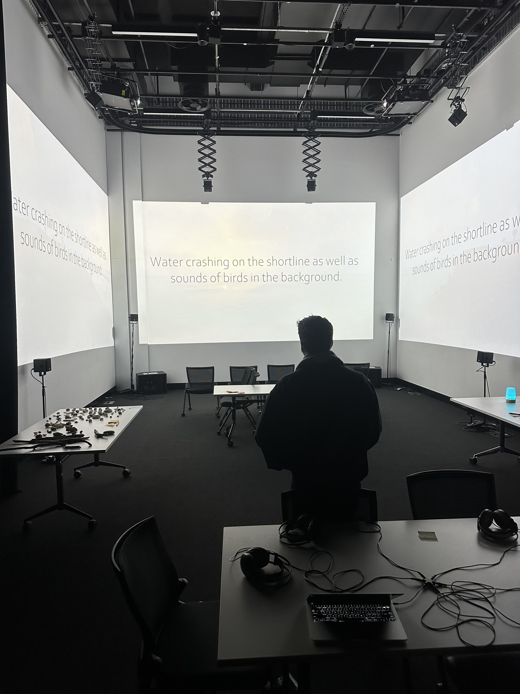
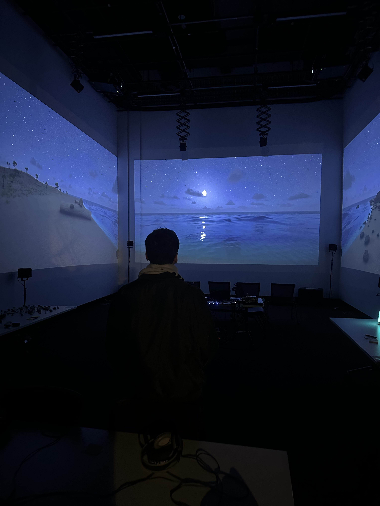
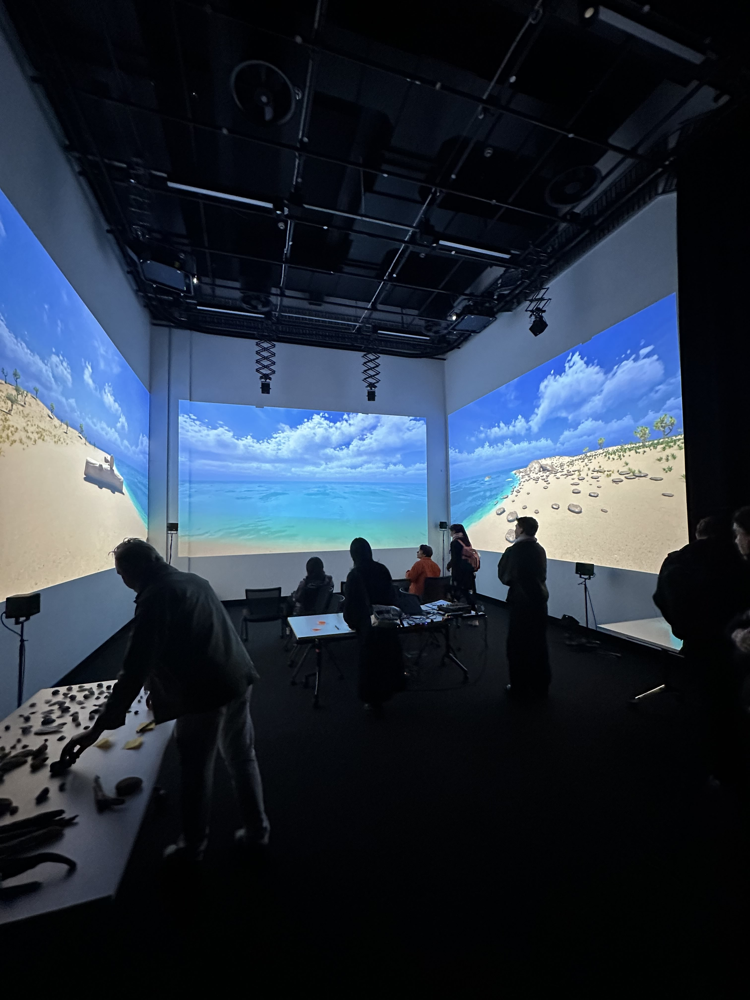
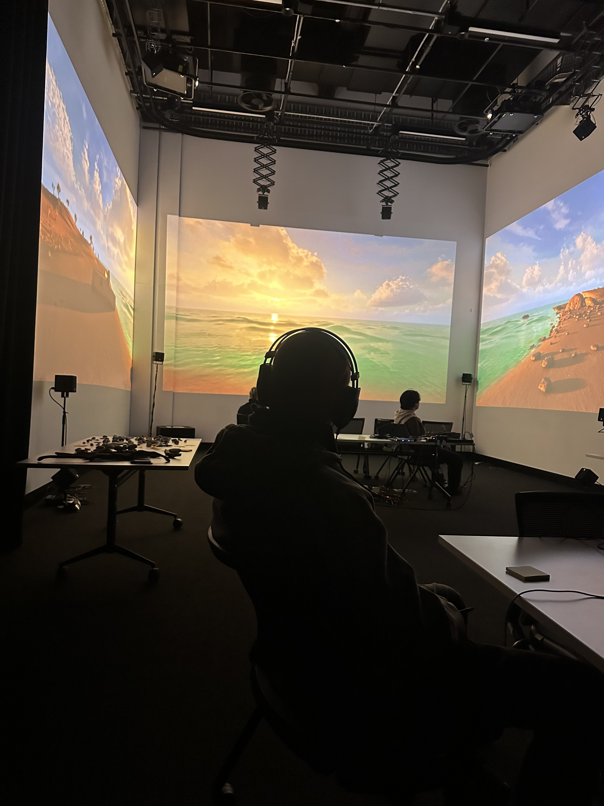
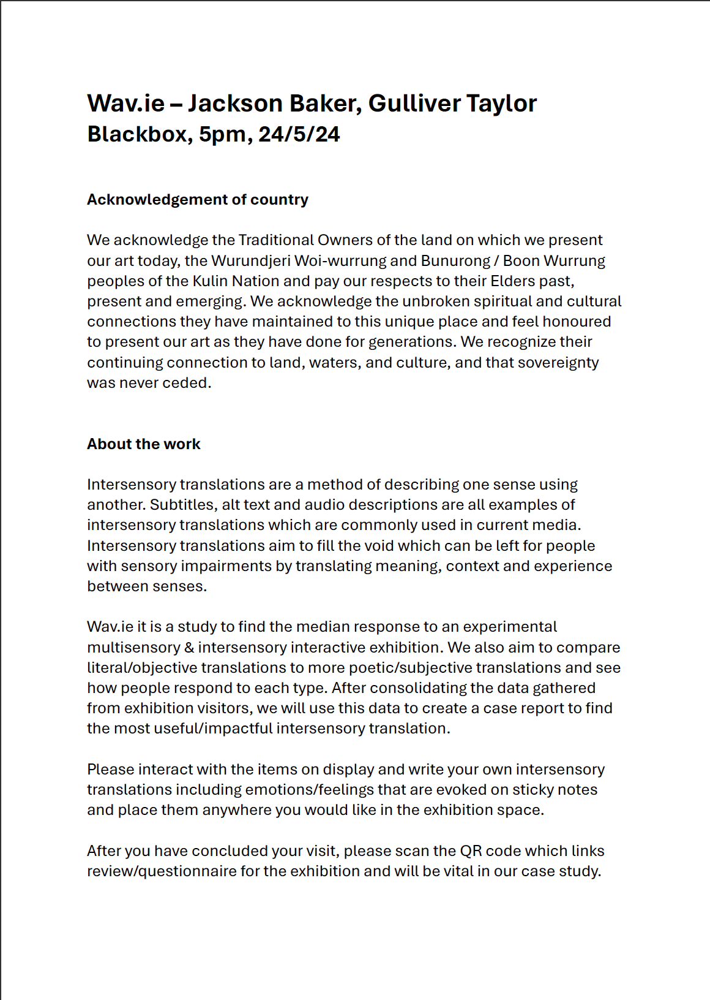

wav.ie was held on the 24/5/24 from 5pm to 7pm in the black box at RMIT. We had a great turn out with many visitors who experienced the intersensory exhibit as well as leaving their own translations and feedback which we used to create our case study.
1 / 12

2 / 12

3 / 12

4 / 12

5 / 12

6 / 12

7 / 12

8 / 12

9 / 12

10 / 12

11 / 12

12 / 12
